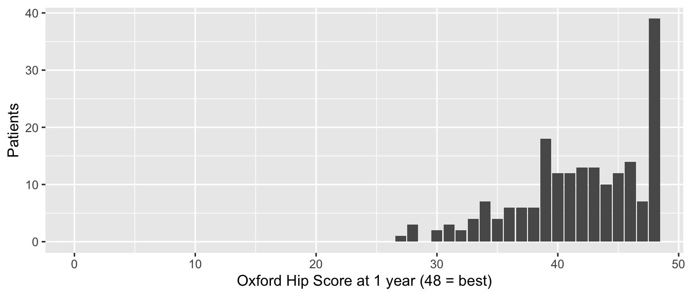

Moyenne et écart-type, médiane et intervalle interquartile, proportion et courbe de survie de Kaplan-Meier, chacun avec un intervalle de confiance à 95 %.
Avant de comparer quoi que ce soit, décrivez. Cette page traite de la première ligne du tableau de décision : un seul nombre (ou une seule courbe) qui résume un groupe de patients, avec un intervalle de confiance à 95 % qui dit avec quelle précision vous le connaissez. Le résumé à choisir dépend de la colonne, c’est-à-dire du type de données. La page 3 explique comment choisir.
Note💡 Comment fonctionne chaque section de cette page
Chaque section répond à une question sur l’un des jeux de données d’exercice : la cohorte de prothèses articulaires, ses mesures des résultats rapportés par le patient (PROM) ou, pour la proportion, les données sur les fractures du fémur proximal. Son premier bloc de code charge les packages et les données : vous pouvez donc aller directement à la section dont vous avez besoin. Exécutez les blocs de cette section dans l’ordre, de haut en bas.
Pour garder le code court, les exemples de prothèses articulaires utilisent tous les cas, y compris les 80 patients opérés des deux côtés. Dans une vraie étude, décidez comment les traiter (page 3) et dites ce que vous avez fait. Dans le code, ces prothèses s’appellent THA et TKA ; dans le texte, nous disons PTH et PTG.
Moyenne et écart-type
La question : quel âge ont nos patients, et à quel point leurs âges varient-ils ?
Quand l’utiliser
La variable est une mesure (âge, IMC, durée opératoire), pas une catégorie.
Sa distribution est à peu près symétrique, sans valeurs atypiques extrêmes. Vérifiez avec un histogramme (page 3).
n = cohort["age"].count()mean = cohort["age"].mean()sd = cohort["age"].std() # pandas divise par n - 1, comme R# IC à 95 % pour la moyenne : moyenne ± t × (ET / √n)age_ci = stats.t.interval(0.95, df=n -1, loc=mean, scale=sd / n **0.5)print(f"n = {n}, mean = {mean:.2f}, sd = {sd:.2f}")
n = 600, mean = 65.52, sd = 9.44
print(f"95% CI {age_ci[0]:.2f} to {age_ci[1]:.2f}")
95% CI 64.76 to 66.28
Lire le résultat
n = 600 : le nombre de cas dont l’âge est noté.
mean = 65.5 ans : la moyenne, l’âge moyen.
sd = 9.4 ans : l’écart-type (ET), la distance typique entre l’âge d’un patient et la moyenne. Dans une distribution en cloche, environ 95 % des patients se trouvent à moins de 2 ET de la moyenne, ici à peu près de 47 à 84 ans.
95% CI de 64.8 à 66.3 : l’intervalle de confiance (IC) de la moyenne. Il dit avec quelle précision 600 patients permettent de situer l’âge moyen de patients comme les nôtres. Il ne dit rien de la dispersion des patients pris un à un : c’est le rôle de l’ET.
Note🔍 Sous le capot : l’IC d’une moyenne
L’erreur standard de la moyenne vaut ET / √n = 9.4 / √600 ≈ 0.39 an. L’IC à 95 % est la moyenne ± t × erreur standard, avec t ≈ 1.96 pour les grands échantillons (un peu plus pour les petits). Si vous quadruplez la taille de l’échantillon, l’erreur standard est divisée par deux ; l’ET reste à peu près le même.
Rédiger les résultats
Methods: Continuous variables are reported as mean (standard deviation, SD) when approximately normally distributed.
Results: The mean age at surgery was 65.5 years (SD 9.4; 95% CI for the mean 64.8 to 66.3).
Avertissement⚠️ Attention : ET ou ESM ?
L’erreur standard de la moyenne (ESM) est bien plus petite que l’ET (0.39 contre 9.4 ans ici). C’est pourquoi certains articles écrivent « moyenne ± ESM » : cela paraît plus net. Mais l’ESM décrit la précision de la moyenne, pas vos patients. Utilisez l’ET pour décrire les patients et un IC à 95 % pour montrer la précision d’une estimation. N’écrivez jamais un « ± » nu sans dire de quoi il s’agit.
Astuce🔀 R ou Python : diviser par n ou par n − 1
sd() de R et .std() de pandas divisent par n − 1 (l’ET « d’échantillon »), ce que vous voulez. np.std() de NumPy divise par n, sauf si vous écrivez np.std(x, ddof=1). Avec 600 patients, la différence est minime ; avec 10, elle ne l’est pas.
Médiane et intervalle interquartile
La question : quel est l’Oxford Hip Score typique 1 an après une prothèse de hanche, et à quel point les scores varient-ils ?
Quand l’utiliser
La variable est asymétrique, a un effet plafond ou plancher, a des valeurs atypiques ou est ordinale (une échelle ordonnée, comme la satisfaction de 1 à 5).
La médiane est la valeur du milieu : la moitié des patients sont au-dessus, la moitié en dessous. L’intervalle interquartile (IIQ) va du 25e au 75e percentile (le premier et le troisième quartile) : il contient la moitié centrale des patients.
Si la variable est une mesure à peu près symétrique → la moyenne et l’ET conviennent, et sont plus familiers.
Regarder d’abord les données
L’Oxford Hip Score (OHS) additionne 12 questions notées de 0 à 4 : il va donc de 0 à 48, et 48 est le meilleur score. Le service l’enregistre pour chaque prothèse de hanche, avant l’opération et à chaque visite de suivi.
library(tidyverse)proms <-read_csv("data/proms_long.csv", show_col_types =FALSE)ohs_1yr <- proms |>filter(visit =="1yr", !is.na(ohs)) |># ohs est vide pour les prothèses de genou et les visites manquéespull(ohs)ggplot(tibble(score = ohs_1yr), aes(score)) +geom_bar() +# une barre par score entiercoord_cartesian(xlim =c(0, 48)) +# toute l'échellelabs(x ="Oxford Hip Score at 1 year (48 = best)", y ="Patients")

import numpy as npimport pandas as pdimport matplotlib.pyplot as pltfrom scipy import statsproms = pd.read_csv("data/proms_long.csv")ohs_1yr = proms.loc[proms["visit"] =="1yr", "ohs"].dropna() # ohs est vide pour les prothèses de genou et les visites manquéesfig, ax = plt.subplots(figsize=(6, 3))ax.hist(ohs_1yr, bins=np.arange(-0.5, 49)) # une barre par score entier, sur toute l'échelleax.set_xlabel("Oxford Hip Score at 1 year (48 = best)")ax.set_ylabel("Patients")plt.show()
Les scores se concentrent près du maximum de 48 (un plafond) : 39 des 194 scores valaient 48. Sous cet amas, il y a une longue queue de patients dont le résultat est moins bon. Une moyenne serait tirée vers le bas par cette queue ; la médiane ne l’est pas.
quantile(ohs_1yr, probs =c(0.25, 0.50, 0.75)) # premier quartile, médiane, troisième quartile
25% 50% 75%
39 42 46
DescTools::MedianCI(ohs_1yr, method ="exact") # la médiane avec son IC à 95 %
median lwr.ci upr.ci
42 41 43
attr(,"conf.level")
[1] 0.9629381
print(len(ohs_1yr)) # combien de patients
194
print(np.quantile(ohs_1yr, [0.25, 0.50, 0.75])) # premier quartile, médiane, troisième quartile
[39. 42. 46.]
# scipy n'a pas de fonction « IC de la médiane », mais quantile_test() en donne un.# Son argument q est la valeur qu'il testerait ; il ne change pas l'IC.median_ci = stats.quantile_test(ohs_1yr, q=ohs_1yr.median(), p=0.5).confidence_interval()print(median_ci)
n = 194 : les prothèses de hanche avec un Oxford Hip Score à 1 an.
Médiane = 42 : le score du milieu. Les scores étant des nombres entiers, beaucoup de patients le partagent (13 ont obtenu exactement 42) : « la moitié au-dessus, la moitié en dessous » n’est donc vrai qu’à peu près.
IIQ de 39 à 46 : la moitié centrale des patients a obtenu un score entre ces deux valeurs. Au moins un quart a obtenu 39 ou moins : avec les valeurs ex æquo, 62 des 194 (32 %) l’ont obtenu.
IC à 95 % de la médiane de 41 à 43 : avec quelle précision 194 patients permettent de situer la médiane.
Note🔍 Sous le capot : d’où vient l’IC de la médiane
L’IC d’une médiane n’utilise aucune formule avec un ET. Il repose sur un comptage. Triez les scores, puis choisissez deux positions telles que, si l’étude était répétée de nombreuses fois, la vraie médiane tomberait entre les scores de ces positions au moins 95 % du temps. La distribution binomiale indique quelles sont ces positions, et l’IC est la paire de scores qui s’y trouvent. Comme les positions sont des nombres entiers, la confiance réelle est un peu supérieure à 95 % (R indique 0.9629 ici). Cette méthode « exacte » ne suppose rien sur la forme des données.
Rédiger les résultats
Methods: Continuous variables that were skewed or bounded are reported as median (interquartile range, IQR).
Results: The median Oxford Hip Score at 1 year was 42 points (IQR 39 to 46; 95% CI for the median 41 to 43).
Avertissement⚠️ Attention : donnez l’IIQ sous la forme de deux nombres
Écrivez « IIQ de 39 à 46 », pas « IIQ 7 » (la largeur). Les lecteurs veulent savoir où se situe la moitié centrale des patients, pas seulement sa largeur. Et ne donnez pas une médiane avec un ET : ils appartiennent à des résumés différents.
Astuce🔀 R ou Python : les quartiles
quantile() de R et np.quantile() de NumPy utilisent la même méthode par défaut (R l’appelle « type 7 ») : ils concordent. Les autres logiciels ne le font pas toujours : gtsummary, SPSS et SAS peuvent donner des quartiles légèrement différents sur les mêmes données (la page 2 en montre un exemple). Dites quel logiciel vous avez utilisé.
Proportion
La question : quelle proportion des patients avec une fracture du fémur proximal sont décédés dans les 30 jours ?
Quand l’utiliser
Le critère est oui/non (binomial) : décès dans les 30 jours, complication, sortie à domicile.
Donnez l’effectif, le pourcentage et un IC à 95 % pour le pourcentage.
Si les patients ont été suivis pendant des durées différentes et que l’événement peut survenir à tout moment (révision, décès) → utilisez plutôt une courbe de Kaplan-Meier. Ici, chaque patient a été suivi au moins 30 jours ou jusqu’à son décès : la proportion à 30 jours est donc complète.
Regarder d’abord les données
Les données sur les fractures du fémur proximal contiennent une ligne par patient de 65 ans ou plus traité pour une fracture du fémur proximal. Pour une variable oui/non, « regarder » veut dire compter, valeurs manquantes comprises.
library(tidyverse)hip_fracture <-read_csv("data/hip_fracture.csv", show_col_types =FALSE)count(hip_fracture, death_30d) # 1 = décédé dans les 30 jours, 0 = vivant à 30 jours
# A tibble: 2 × 2
death_30d n
<dbl> <int>
1 0 1126
2 1 74
import pandas as pdfrom scipy import statship_fracture = pd.read_csv("data/hip_fracture.csv")print(hip_fracture["death_30d"].value_counts(dropna=False)) # 1 = décédé dans les 30 jours, 0 = vivant à 30 jours
death_30d
0 1126
1 74
Name: count, dtype: int64
Aucune valeur manquante, et seulement les deux codes que le dictionnaire de données autorise (0 et 1).
74 sur 1,200 = 0.062 : 6.2 % des patients sont décédés dans les 30 jours suivant l’admission.
IC à 95 % de 0.049 à 0.077 : la vraie mortalité à 30 jours pour des patients comme les nôtres se situe plausiblement entre 4.9 % et 7.7 %.
Rédiger les résultats
Methods: Categorical variables are reported as number (percentage). 95% confidence intervals for proportions were calculated with the Wilson score method.
Results: Within 30 days of admission, 74 of 1,200 patients died (6.2%; 95% CI 4.9% to 7.7%).
Avertissement⚠️ Attention : pourcentage de quoi ?
Dites quel est le dénominateur. Ici, ce sont 1,200 patients : les données sur les fractures du fémur proximal ont une ligne par patient. Dans la cohorte de prothèses articulaires, les lignes sont des interventions, et les 80 patients opérés des deux côtés comptent deux fois : un pourcentage y est donc un pourcentage d’interventions. Si certains critères de jugement manquaient, le dénominateur est l’ensemble des patients dont le critère est connu ; dites combien manquaient.
N’utilisez pas l’IC simple « ± 1.96 erreur standard » (l’intervalle de Wald) pour les proportions. Pour les événements rares, il peut descendre sous 0 %. L’intervalle de Wilson, non.
Astuce🔀 R ou Python : quel IC pour une proportion ?
prop.test() de R donne l’intervalle de Wilson, mais ajoute une correction de continuité, sauf si vous écrivez correct = FALSE. proportion_ci() de scipy appelle "wilson" la version sans correction et "wilsoncc" la version corrigée. binom.test() de R et method="exact" de scipy donnent l’intervalle de Clopper-Pearson, plus conservateur (la page 5 l’utilise). Tous sont acceptables ; dites lequel vous avez utilisé.
Courbe de survie de Kaplan-Meier
La question : quelle proportion des implants n’ont toujours pas été révisés 5 ans après l’opération ?
Quand l’utiliser
Le critère est le délai jusqu’à un événement (révision, décès), et les patients ont été suivis pendant des durées différentes.
Certains patients sont censurés : leur suivi s’est arrêté (l’étude a pris fin, ils ont déménagé, ils sont décédés) avant toute révision. Nous savons qu’ils sont restés au moins aussi longtemps sans révision.
Un simple pourcentage (« 13.5 % ont été révisés ») ignore la durée de suivi : un patient opéré l’an dernier n’a pas eu le temps d’avoir besoin d’une révision. La méthode de Kaplan-Meier utilise le suivi de chaque patient aussi longtemps qu’il dure.
La page 13 traite l’analyse de survie en détail. Cette section montre la courbe de base.
Chaque ligne a besoin d’exactement deux informations : combien de temps le patient a été suivi et si le suivi s’est terminé par l’événement (1) ou par une censure (0). Le premier cas a été suivi pendant 6.2 ans sans révision ; le cinquième a été révisé à 5.8 ans.
km <-survfit2(Surv(followup_years, revised) ~1, data = cohort,conf.type ="log-log") # la méthode d'IC que lifelines utilisekm |>ggsurvfit() +add_confidence_interval() +add_risktable() +scale_ggsurvfit() +labs(x ="Years since surgery", y ="Revision-free survival")
summary(km, times =5) # l'estimation à 5 ans
Call: survfit(formula = Surv(followup_years, revised) ~ 1, data = cohort,
conf.type = "log-log")
time n.risk n.event survival std.err lower 95% CI upper 95% CI
5 263 66 0.863 0.0162 0.828 0.892
km = KaplanMeierFitter()km.fit(cohort["followup_years"], event_observed=cohort["revised"])
<lifelines.KaplanMeierFitter:"KM_estimate", fitted with 600 total observations, 519 right-censored observations>
fig, ax = plt.subplots(figsize=(7, 4.5))km.plot_survival_function(ax=ax, legend=False)ax.set_xlabel("Years since surgery")ax.set_ylabel("Revision-free survival")add_at_risk_counts(km, ax=ax)plt.tight_layout()plt.show()
# l'estimation et son IC à 95 % à 5 ansat_5 = km.survival_function_at_times(5).iloc[0]ci_5 = km.confidence_interval_survival_function_.loc[:5].iloc[-1] # dernier palier à 5 ans ou avantprint(at_5, ci_5.to_list())
La courbe commence à 100 % et descend d’un palier à chaque révision. Les patients censurés ne la font pas descendre ; ils quittent simplement le groupe « à risque ».
La bande ombrée est l’IC à 95 %. Elle s’élargit vers la droite, car il reste de moins en moins de patients suivis.
Les effectifs à risque (Number at risk sur le graphique) sous le graphique indiquent combien de patients étaient encore suivis à chaque moment. Faites moins confiance à l’extrémité droite de la courbe : à 10 ans, il n’en reste qu’une poignée.
À 5 ans : survie de 0.863 (IC à 95 % de 0.828 à 0.892), avec 263 patients encore à risque.
Rédiger les résultats
Methods: Implant survivorship was estimated with the Kaplan-Meier method, with revision for any reason as the end point. Patients were censored at death or at their last follow-up.
Results: Revision-free survival at 5 years was 86.3% (95% CI 82.8% to 89.2%; 263 patients at risk).
Avertissement⚠️ Attention : le décès n’est pas seulement une « perte de vue »
Traiter les décès comme des censures, comme ici, suppose que les patients décédés auraient été révisés au même rythme que tous les autres. Ce n’est pas possible : un patient décédé ne pourra jamais être révisé. Quand beaucoup de patients décèdent pendant le suivi, 1 moins l’estimation de Kaplan-Meier surestime le risque de révision. La page 13 montre la méthode des risques concurrents qui corrige ce problème.
Astuce🔀 R ou Python : la bande de confiance
survfit() de R utilise par défaut un IC « log » ; lifelines utilise « log-log ». Les estimations sont identiques, mais les IC diffèrent légèrement. Nous écrivons conf.type = "log-log" dans R pour que les deux concordent. Le log-log garde l’IC entre 0 % et 100 % ; dites lequel vous avez utilisé.
Exercices
Les solutions utilisent les packages et les données chargés dans les sections ci-dessus : exécutez donc d’abord la page depuis le début.
1. Décrivez l’IMC dans la cohorte avec une moyenne, un ET et un IC à 95 % pour la moyenne. Regardez d’abord l’histogramme : la moyenne est-elle un bon résumé ?
L’histogramme est à peu près symétrique : la moyenne est donc un bon résumé.
Results: Mean BMI was 30.4 kg/m² (SD 5.4; 95% CI for the mean 30.0 to 30.9).
2. Un médecin assistant veut résumer la durée de séjour dans un tableau 1 par « 0.9 ± 1.1 jours ». Que suggéreriez-vous à la place, et pourquoi ? Calculez-le.
AstuceSolution
La durée de séjour est fortement asymétrique à droite (la plupart des patients rentrent chez eux au jour 0 ou 1, quelques-uns restent 4 à 6 jours) : donnez donc la médiane (IIQ). Le « ± » est aussi ambigu : ET ou ESM ?
import numpy as npprint(np.quantile(cohort["los_days"], [0.25, 0.50, 0.75]))
[0. 1. 1.]
Results: The median length of stay was 1 day (IQR 0 to 1).
3. Combien de patients avec une fracture du fémur proximal vivaient en EMS avant la fracture ? Rédigez la phrase de Résultats, avec un IC de Wilson à 95 %.